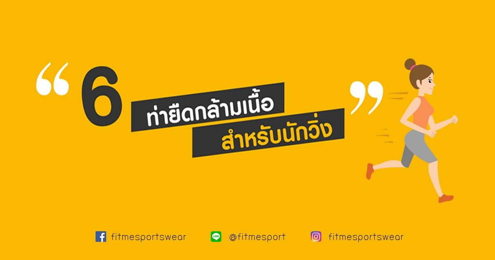
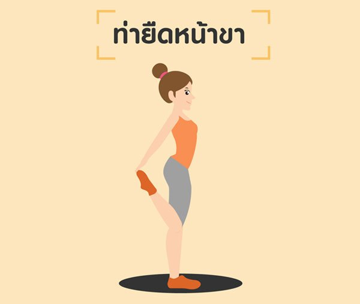
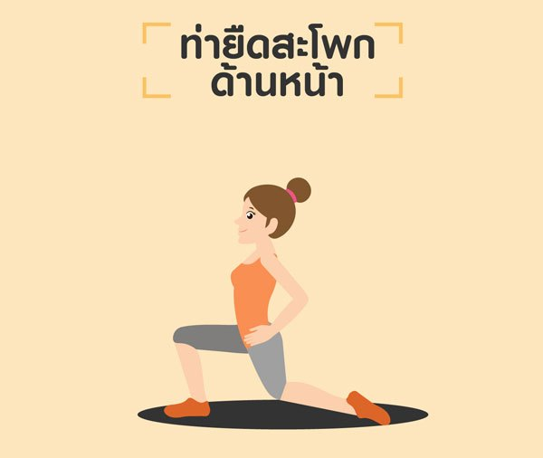
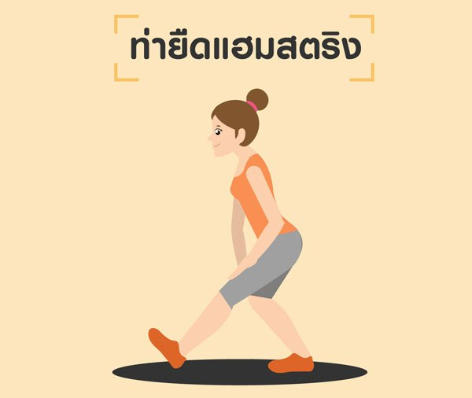
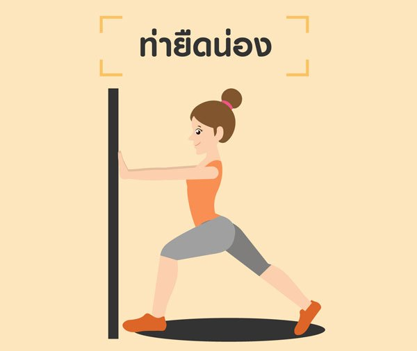
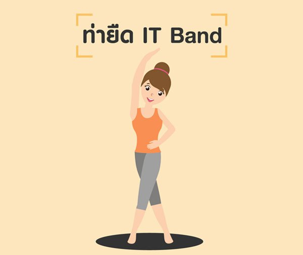
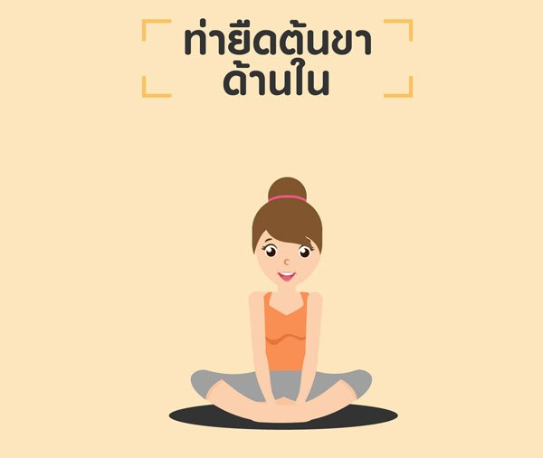

6 ท่ายืดเหยียดกล้ามเนื้อ สำหรับนักวิ่ง ลดอาการบาดเจ็บ
23/10/2019 · by fitmesport · in Fitness & Strength, Training Tips

หลังจากการวิ่งออกกำลังกายที่แสนเหน็ดเหนื่อย หลายๆ คนมองข้ามการคูลดาวน์ และ การยืดเหยียดกล้ามเนื้อ
เพราะคิดว่าเป็นสิ่งที่เสียเวลา หรือบางคนอาจจะให้เวลาในการยืดเหยียดกล้ามเนื้อน้อยมาก
ซึ่งสิ่งเหล่านี้อาจทำให้เกิดอาการบาดเจ็บของกล้ามเนื้อได้ วันนี้ FitMe มี ท่ายืดเหยียดกล้ามเนื้อ
หลังวิ่งมาแนะนำกันค่ะ ตามไปอ่านกันได้เลย
6 ท่ายืดเหยียดกล้ามเนื้อ หลังวิ่ง ป้องกันการบาดเจ็บ
ก่อนที่เราจะไปดู ท่ายืดเหยียดกล้ามเนื้อ สำหรับนักวิ่ง
เรามาดูก่อนว่าการยืดเหยียดกล้ามเนื้อหลังออกกำลังกายมีประโยชน์อย่างไรกันก่อนดีกว่า
ช่วยเพิ่มความยืดหยุ่นของข้อต่อและกล้ามเนื้อ ทำให้ร่างกายเคลื่อนไหวได้คล่องแคล่ว
ป้องกันอาการบาดเจ็บของกล้ามเนื้อ ลดอาการตึง และปวดเมื่อยกล้ามเนื้อ
ช่วยให้ร่างกายทำงานได้อย่างมีประสิทธิภาพมากขึ้น
หลังจากการวิ่ง เราควรคูลดาวน์ด้วยการค่อยๆ ลดความเร็วลงและจ็อกกิ้งเบาๆ อย่างน้อย 5-10 นาที
เพราะตอนที่เราออกกำลังกาย ร่างกายจะทำงานเกินภาวะปกติ ทั้งอัตราการเต้นของหัวใจ ความดัน การทำงานของปอด
การคูลดาวน์จึงช่วยปรับสภาพร่างกายมาสู่ภาวะปกติ หลังจากนั้น ก็มาทำท่ายืดเหยียดหลังวิ่งกันได้เลย

1. ท่ายืดเหยียดหน้าขา
พับเข่าด้านที่ต้องการยืดไปด้านหลังและใช้มือจับขาหรือข้อเท้า และค่อยๆดึงฝ่าเท้าเข้ามาให้ใกล้กับสะโพก
โดยพยายามให้เข่าทั้งสองข้างชิดกัน จนรู้สึกตึงหน้าขา ทำค้างไว้และสลับข้าง

2. ท่ายืดเหยียดสะโพกด้านหน้า
ก้าวขาไปด้านหน้าหนึ่งก้าว โดยขาที่เราต้องการยืดเหยียดจะอยู่ด้านหลัง ให้ปลายเท้าทั้งสองข้างชี้ตรง
จากนั้นย่อตัวลงจนรู้สึกตึงบริเวณหน้าขา ทำค้างไว้และสลับข้าง

3. ท่ายืดเหยียดแฮมสตริง (Hamstring)
ยืดขาที่ต้องการยืดเหยียดไปด้านหน้า เอามือทั้งสองข้างเท้าสะโพกไว้
กระดกขาที่อยู่ด้านหน้าและค่อยก้มตัวลงจนรู้สึกตึงขา ระหว่างที่ก้มพยายามทำให้หลังตรงตลอดเวลา
ทำค้างไว้และสลับข้าง

4. ท่ายืดเหยียดน่อง
ยืนหันหน้าเข้าผนัง ใช้แขนดันผนัง ก้าวขาเข้าหาผนังหนึ่งข้าง พร้อมงอเข่า
และเหยียดขาด้านที่ต้องการยืดไปด้านหลังให้ตึงและออกแรงดันผนังไว้ เพื่อยืดกล้ามเนื้อน่อง
ทำค้างไว้และสลับข้าง

5. ท่ายืดเหยียด IT Band
ไขว้ขาด้านที่ต้องการยืดไปด้านหลัง
จากนั้นให้เอียงตัวไปด้านเดียวกับขาที่ไขว้ไปด้านหลังและพยายามดันสะโพกมาด้านหน้า โดยกดฝ่าเท้าทั้ง 2
ข้างให้ติดพื้นไว้ ทำค้างไว้และสลับข้าง

6. ท่ายืดเหยียดต้นขาด้านใน
นั่งกับพื้น โดยนำฝ่าเท้าทั้งสองข้างมาประกบกันด้านหน้า ใช้มือจับเท้าทั้งสองข้าง และก้มตัวมาข้างหน้า
โดยให้ข้อศอกกดเข่าทั้งสองข้างให้กางออก จนรู้สึกตึงบริเวณต้นขาด้านใน และทำค้างไว้